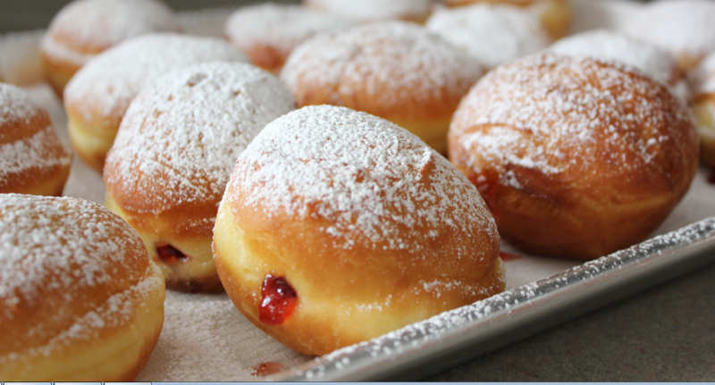

Donuts

homemade Serbian donuts...
How about something like this...?
just look at the picture and it speaks for itself.
This time, what's in the window is what's in the store, I won't screw you up like I did with the pancakes.
You will get the recipe and if you use it well, as well as the pancakes, you will not regret it.
So let's start.
-components-
- 800 grams of flour 2 eggs
- 400 ml milk
- 50 g of yeast(fresh)
- 1 spoon full of of sugar
- 1 teaspoon of salt
- 50 ml of oil
-preparation-
- Mix warm milk, crushed yeast and sugar. Add the other ingredients (50 ml of oil, 2 whole eggs, salt, flour and lemon zest if using) and knead the dough. Cover the vangla and let it stand in a warm place until it rises. Knead and let it rise again.
- On a floured work surface, roll out the dough to a thickness of 1 cm. Remove the donuts from the dough with a round mold or a cup.
- Arrange the cut donut dough on a floured work surface. Cover with a kitchen towel and let it stand for 20-30 minutes.
- The pan in which the donuts will be fried should be wide and low (so that the donuts can be turned more easily). When frying, the donuts should float in the oil (do not touch the bottom). The oil must not be too hot.
- Oil your hands a little, take the dough for donuts and lower the side that was up into the oil. Fry 4 donuts at the same time. Cover with a lid and fry until the donut puffs up well, then remove the lid, turn the donuts to the other side and bake until the end.
- Put the breaded donuts on kitchen paper to absorb the excess fat.
- You can fill the donuts as soon as you see them, sprinkle with powdered sugar, various glazes as desired.
- Tip: The oil for the donuts should not be too hot. It is best to check the temperature by inserting a small piece of dough into the oil. The oil is ideal if small bubbles start to form around the dough. If the dough immediately darkens, the oil is too hot and then it should be cooled, by removing it from the heat and adding a little cold oil, or reducing the temperature.
- Each time you drop the donuts into the oil, fold and fry the folded donuts until they are well puffed, remove the lid, flip and fry without the lid. We do this so that the donuts will puff up well, become softer and get a white belt. If you want donuts that are not hollow, roll out the dough thicker than 1 cm.
that's it people, it's not simple but it's unique, enjoy your meal